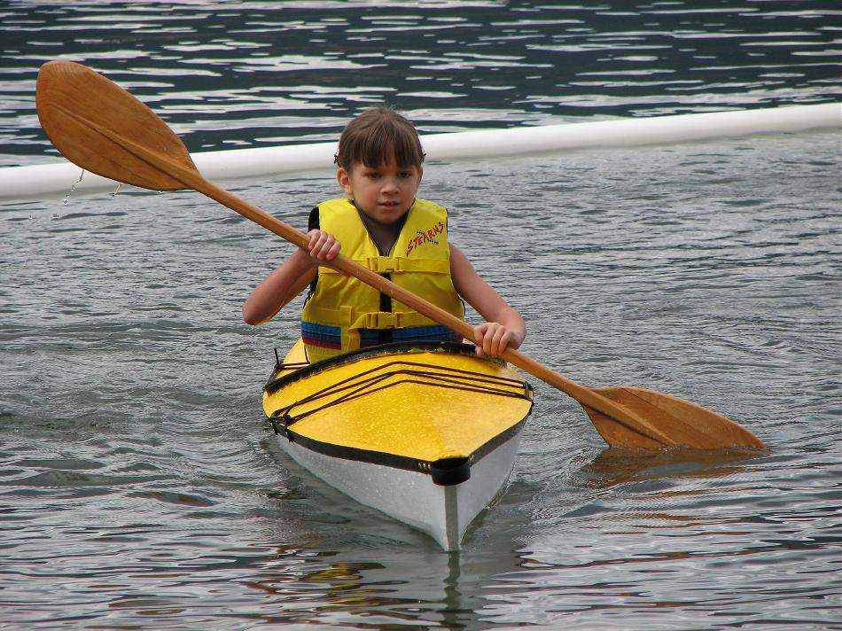

| Sea Flea by Heather Langlois (US) | Menu Last Page Next Page |
|

Seven year old Lilly from Chewelah, Washington paddles the Sea Flea she and her mother Heather built. Use the {Back} key to return. The stringers are Western Red Cedar, the cross sections are plywood, and the skin is canvas coated with exterior latex paint. Lilly finds the kayak to be stable and fun to paddle.
|
|